There are some other, smaller additions in ggh4x that aren’t really covered in the other vignettes.
Multiple colour scales
One colour scale is sometimes not enough to describe your data. You can map several variables to colours with scale_colour_multi() if data are in separate layers. It works like scale_colour_gradientn(), but you can declare the aesthetics to and provide other arguments in a vectorised way, parallel to the aesthetics argument. In the example below, a list() of colours is given, where the 1 list elements becomes the argument of the first scale, the 2nd list element goes to the second scale and so on. Other arguments that expect input of length one can be given as a vector.
# Separating layers by species and declaring (yet) unknown aesthetics
g <- ggplot(iris, aes(Sepal.Width, Sepal.Length)) +
geom_point(aes(swidth = Sepal.Width),
data = ~ subset(., Species == "setosa")) +
geom_point(aes(pleng = Petal.Length),
data = ~ subset(., Species == "versicolor")) +
geom_point(aes(pwidth = Petal.Width),
data = ~ subset(., Species == "virginica")) +
facet_wrap(~ Species, scales = "free_x")
#> Warning: Ignoring unknown aesthetics: swidth
#> Warning: Ignoring unknown aesthetics: pleng
#> Warning: Ignoring unknown aesthetics: pwidth
# This generated quite some warnings, but this is no reason to worry!
g + scale_colour_multi(
aesthetics = c("swidth", "pleng", "pwidth"),
# Providing colours as a list distributes list-elements over different scales
colours = list(c("black", "green"),
c("gray", "red"),
c("white", "blue")),
guide = list(guide_colourbar(barheight = unit(35, "pt")))
)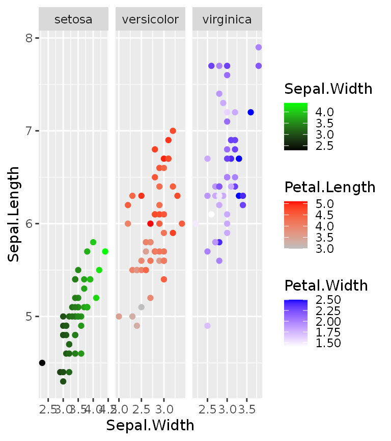
You can combine continuous and discrete colour scales with the slightly more verbose scale_listed(). We can illustrate this with a heatmap, wherein we maybe want to use a discrete fill for some annotation, but a continuous fill for the heatmap values. The example below also includes geom_tilemargin(), which conveniently can annotate heatmaps in the margin of a plot.
We can provide the correct fill scales as a list, as long as we match up the new aesthetics in the scales themselves and declare which old aesthetic they are to replace.
# Reshaping the iris dataset for heatmap purposes
iriscor <- cor(t(iris[, 1:4]))
iriscor <- data.frame(
x = as.vector(row(iriscor)),
y = as.vector(col(iriscor)),
correlation = as.vector(iriscor)
)
iris_df <- transform(iris, id = seq_len(nrow(iris)))
# Setting up the heatmap
g <- ggplot(iris_df, aes(id, id)) +
geom_tilemargin(aes(species = Species)) +
geom_raster(aes(x, y, cor = correlation),
data = iriscor) +
coord_fixed()
#> Warning: Ignoring unknown aesthetics: species
#> Warning: Ignoring unknown aesthetics: cor
g + scale_listed(scalelist = list(
scale_fill_distiller(palette = "RdBu", aesthetics = "cor"),
scale_fill_brewer(palette = "Set1", aesthetics = "species")
), replaces = c("fill", "fill"))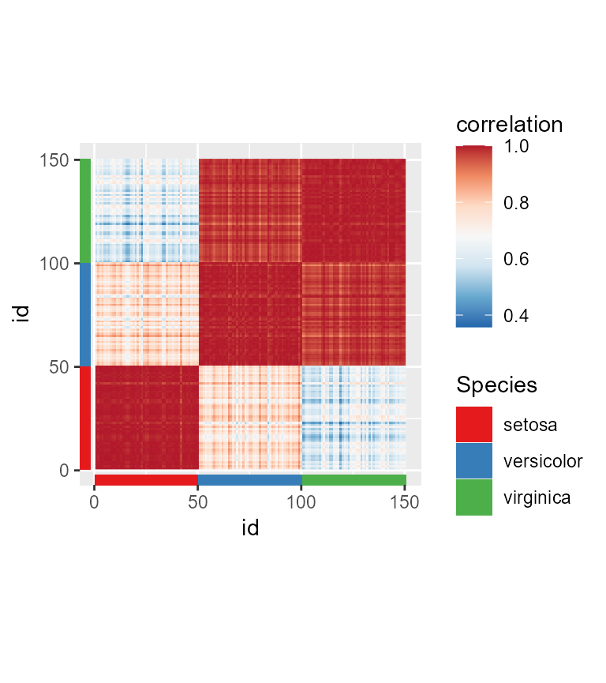
String legends
A simple but effective way to illustrate a straightforward mapping of colour or fill aesthetics, is to use coloured text. In ggh4x, you can do this by setting guide = "stringlegend" as argument to colour and fill scales, or set guides(colour = "stringlegend").
ggplot(diamonds, aes(price, carat, colour = clarity)) +
geom_point(shape = ".") +
scale_colour_brewer(palette = "Dark2", guide = "stringlegend")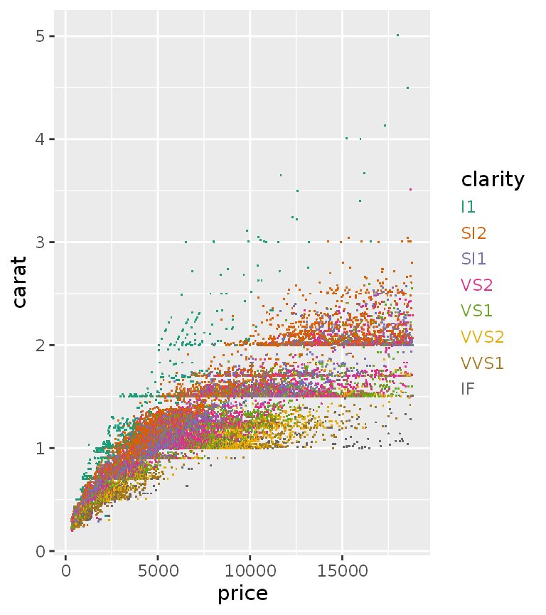
These legends do not have any keys, so key-related options are absent when you use guide_stringlegend(). However, a few label related options like family, face, size have been added, as well as options to control the spacing between the labels through spacing/spacing.x/spacing.y.
p <- ggplot(mpg, aes(displ, hwy)) +
geom_point(aes(colour = class))
p + guides(colour = guide_stringlegend(face = "bold", spacing = 15))
p + guides(colour = guide_stringlegend(spacing.x = 0, spacing.y = 5,
family = "mono", ncol = 2))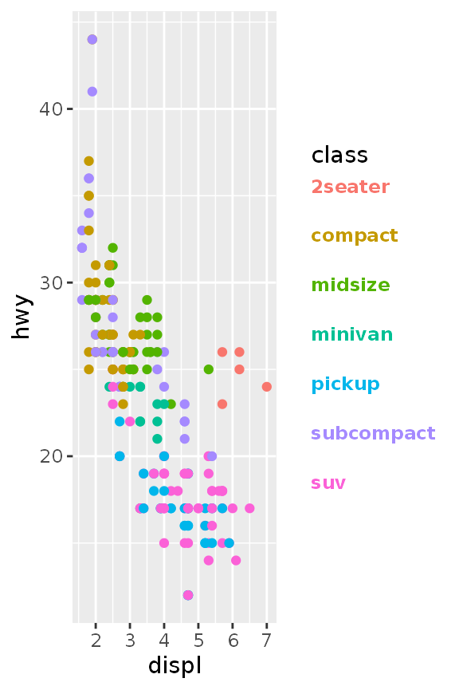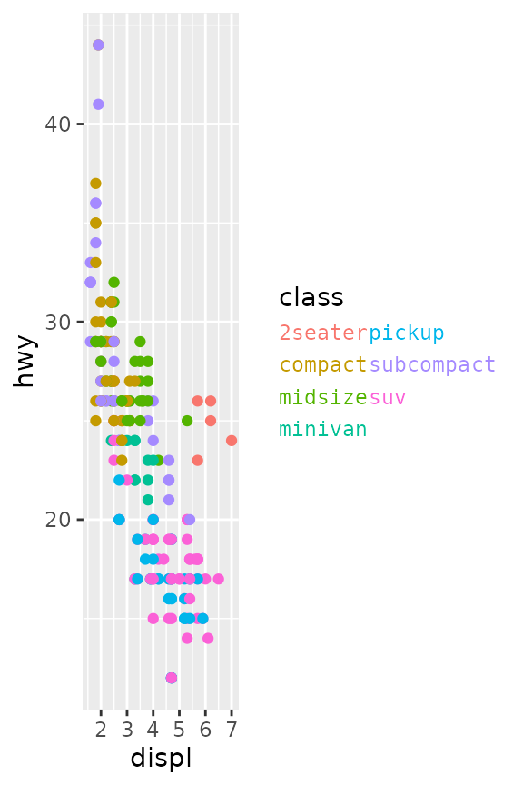
Point paths
The return of the good old type = 'b' plot from base R! This geom makes point connected through a line that starts and ends a small distance from the points themselves. Calculating these small offsets in absolute coordinates instead of data coordinates means they are stable at different aspect ratios.
set.seed(0)
df <- data.frame(
x = 1:10,
y = cumsum(rnorm(10))
)
p <- ggplot(pressure, aes(temperature, pressure)) +
geom_pointpath()
p + theme(aspect.ratio = 0.5)
p + theme(aspect.ratio = 2)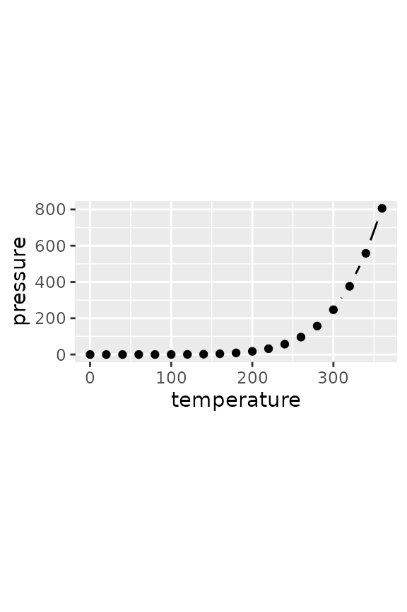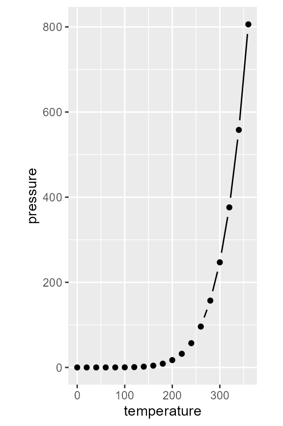
The size of the small offset can be controlled with the mult multiplier argument, but is otherwise dependant on the average of on the linesize aesthetic for stroke size and size aesthetic for point size. Also note that the connecting lines disappear when points are spaced closely together.
ggplot(pressure, aes(temperature, pressure)) +
geom_pointpath(linesize = 2, size = 2, mult = 1)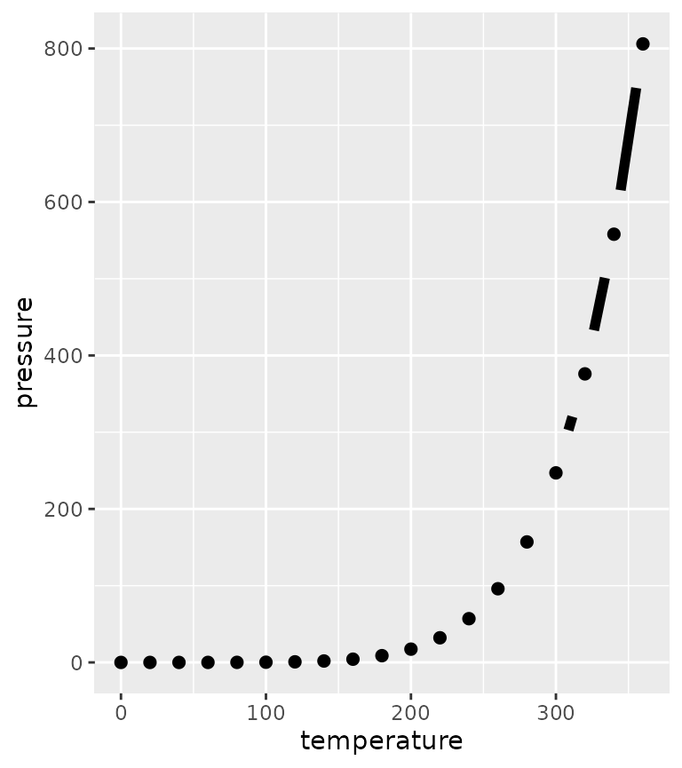
An added bonus is that we can also use this point path in cartesian coordinates to get consistent curves.
p + coord_polar(theta = "y")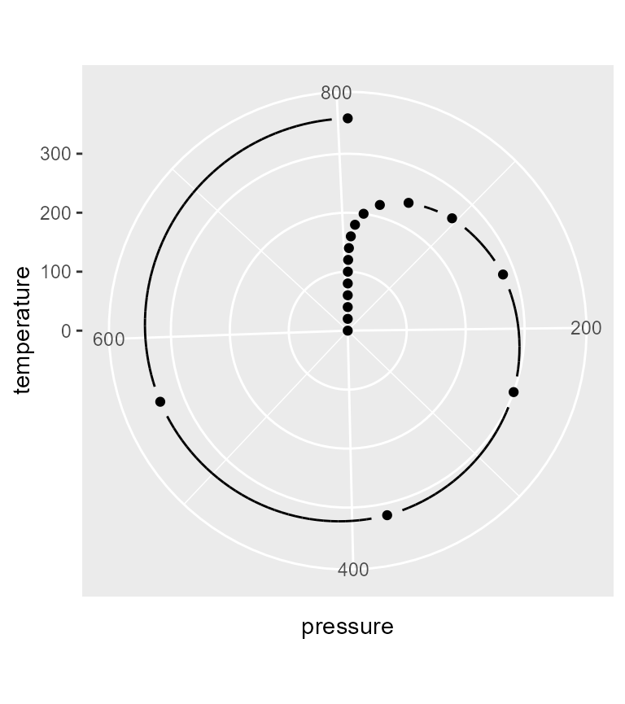
Polygon rasters
When you want to do more with rasters than just displaying them, the geom_raster() and related tile- and rect geoms can be a bit inflexible. To allow transformations of rasters, there is geom_polygonraster(), which reparameterises the raster into x and y parameterised polygons. This is less efficient than the regular raster, but more flexible. With position_lineartrans() you can perform linear transformations on the coordinates.
df <- data.frame(
x = as.vector(row(volcano)),
y = as.vector(col(volcano)),
value = as.vector(volcano)
)
g <- ggplot(df, aes(x, y, fill = value)) +
scale_fill_viridis_c(guide = "none") +
theme_void()
g + geom_polygonraster(position = position_lineartrans(shear = c(0.2, 0.2))) +
coord_fixed()
g + geom_polygonraster(position = position_lineartrans(angle = 45)) +
coord_fixed()
g + geom_polygonraster() + coord_polar() 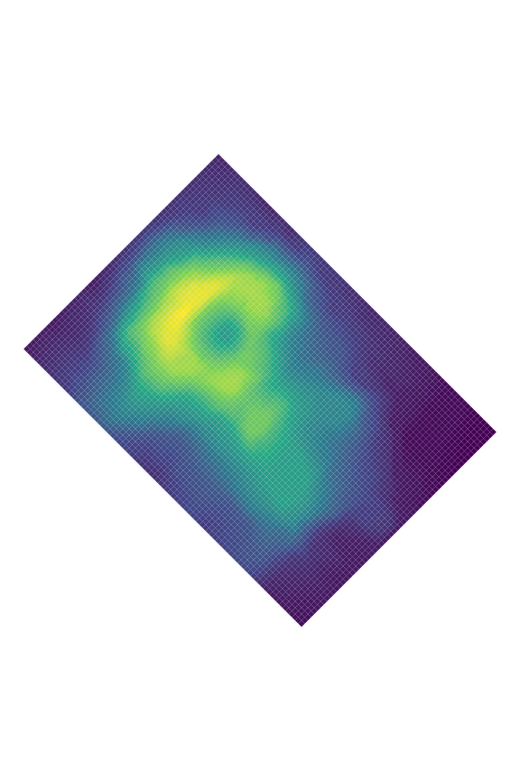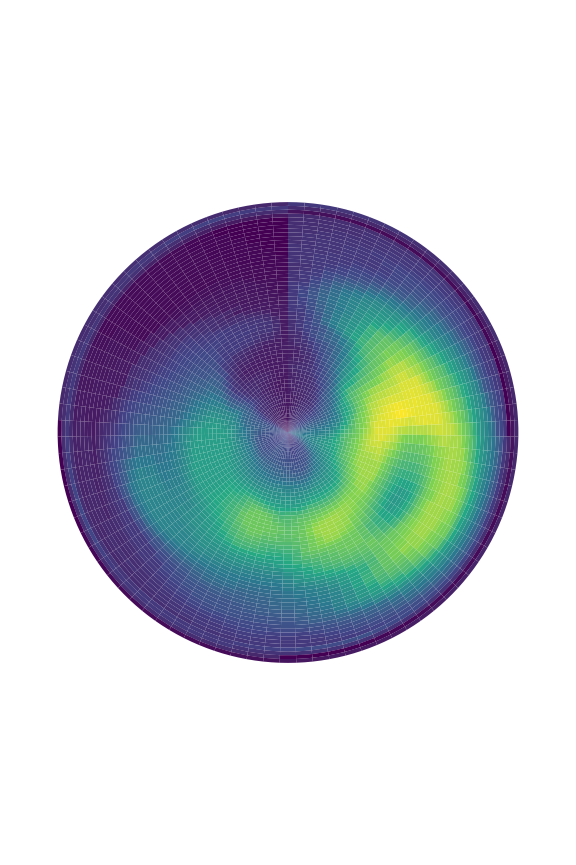
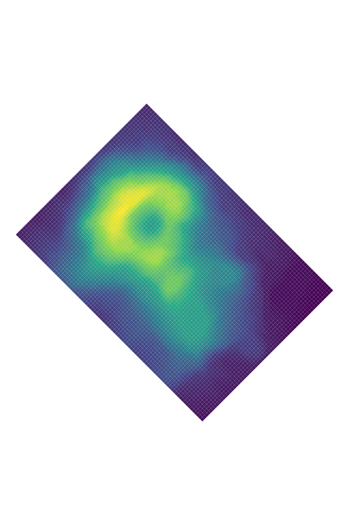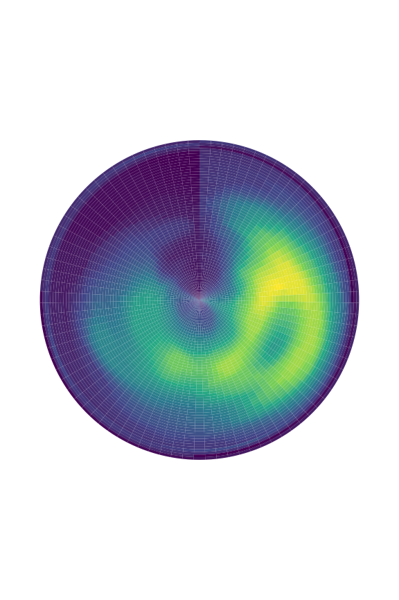
Aiming text
You might sometimes want to put text in a plot at a particular angle. You might want to annotate something ‘away’ from something else, in which case it can sometimes be a bit of a pain to calculate the correct angle, only to conclude that after resizing the plot that the angle was not correct. With geom_text_aimed() the text is rotated by an angle parallel to a line going from the text’s [x,y] coordinate through some point in [xend,yend]. In the example below, we ‘aim’ the text at the middle of the plot.
ggplot(transform(mtcars, car = rownames(mtcars)),
aes(mpg, wt)) +
geom_point(aes(colour = as.factor(cyl))) +
geom_text_aimed(aes(label = car),
hjust = -0.2, size = 3,
xend = sum(range(mtcars$mpg)) / 2,
yend = sum(range(mtcars$wt)) / 2) +
coord_cartesian(clip = "off")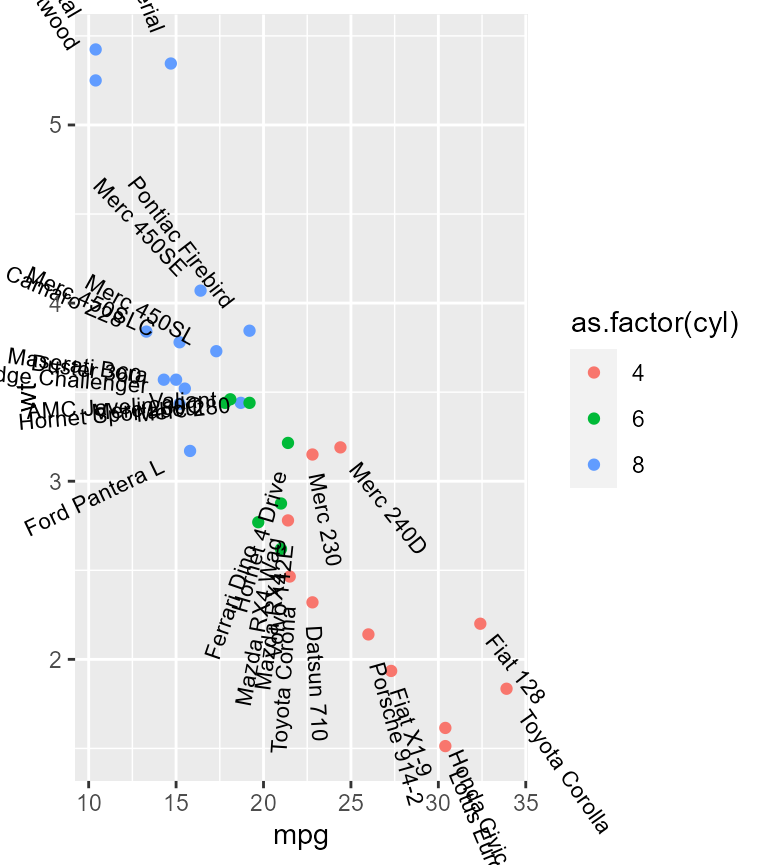
While the example above might be a bit silly, it might be easier to show the usefulness when trying to annotate pieces of a polar coordinates chart. Specifically for these kinds of charts, the default [xend,yend] position is at [-Inf, Inf].
ggplot(mpg, aes(factor(1), fill = class)) +
geom_bar(show.legend = FALSE, position = "fill") +
geom_text_aimed(aes(x = 1.2, label = class, group = class),
position = position_fill(vjust = 0.5),
stat = "count") +
coord_polar("y") +
theme_void()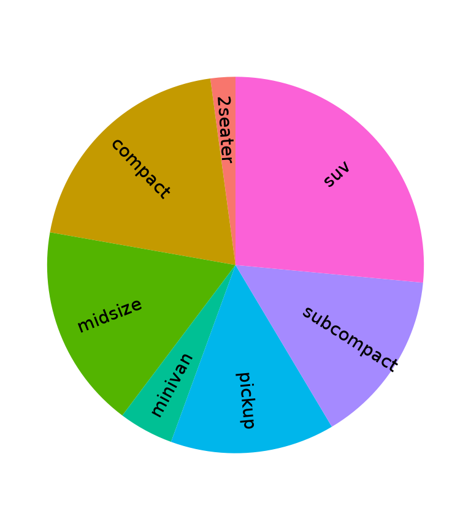
When specifying an angle in the geom, the calculated angle is added, such that angle = 90 means that the text will become perpendicular to the point defined in [xend, yend].
ggplot(diamonds, aes(cut, fill = clarity)) +
geom_bar(width = 1) +
geom_text_aimed(aes(label = cut, group = cut),
angle = 90,
stat = "count", nudge_y = 2000) +
scale_x_discrete(labels = NULL) +
coord_polar()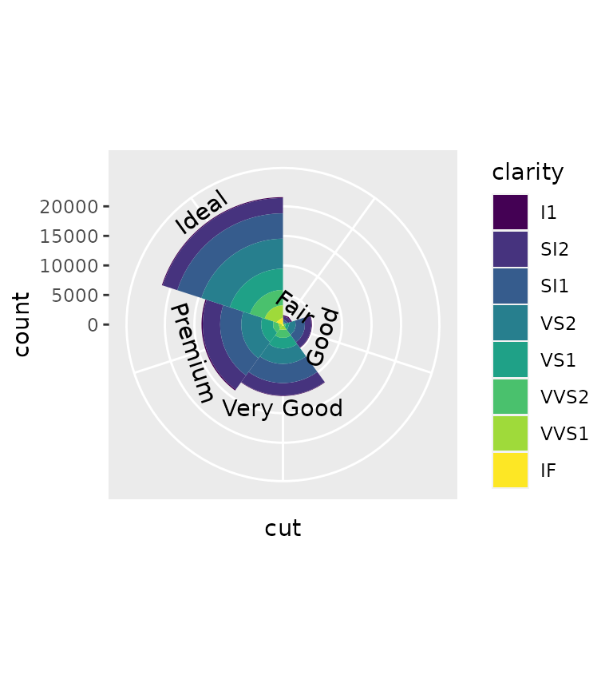